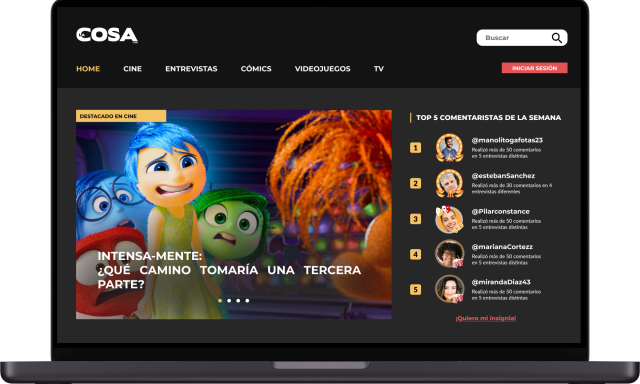

La Cosa Cine
Desarrollo y rediseño de la página web del medio de comunicación argentino “La Cosa Cine”
- 🎨Rol: Rediseño de producto (UX/UI), desarrollo web
- 🛠 Herramientas: Figma, Adobe Illustrator, Adobe Photoshop, VS Code.
*Nota: Esto en un proyecto conceptual y grupal.

Desafío
El proyecto de La Cosa Cine se centró en el rediseño y desarrollo frontend de la página web del medio argentino, con el propósito de destacar sus entrevistas exclusivas, crear una sección dedicada a ellas y fomentar la interacción del usuario a través de comentarios, sugerencias y una sección de contenidos recomendados, proporcionando información técnica y formal sobre cine, televisión, videojuegos y cómics
Proceso de diseño
La investigación se basó en el análisis del medio y sus seguidores. Se crearon dos user persona: un profesional en busca de información técnica para su carrera y un aspirante a entrevistador. Esta fase fue crucial para determinar la inclusión de funcionalidades como la posibilidad de comentar, un sistema de gamificación con insignias y un mayor realce de la sección de entrevistas
Para La Cosa Cine, se elaboró un moodboard con un diseño minimalista manteniendo los colores característicos del medio. Adicionalmente, se llevó a cabo un benchmark de sitios web para inspirarse en la implementación de secciones de comentarios y gamificación, analizando plataformas como YouTube para comentarios, ComingSoon para reseñas, Sensacine para barras de navegación y El Séptimo Arte para la presentación de noticias
Se realizó un card sorting cerrado con siete participantes para optimizar la jerarquización y organización de las secciones de la web, especialmente la página de inicio y la búsqueda de entrevistas. Posteriormente, se diseñaron wireframes para detallar la estructura de la información, lo que culminó en el prototipo final
Mockups

Resultado
Se comenzaron a dibujar wireframes de baja fidelidad para el diseño de la página de inicio, búsqueda de vuelos y personalización del viaje. Luego, se creó una guía de estilos para mantener la esencia de la marca JetSMART. El prototipo de alta fidelidad fue sometido a un testeo de usabilidad con resultados muy positivos, demostrando que la navegación era adecuada
Aprendizaje
Este proyecto subraya la importancia de que una aerolínea en crecimiento como JetSMART ofrezca una experiencia apta para todo su público, brindando tranquilidad y comodidad. Es crucial que las mejoras sean revisadas y actualizadas constantemente para asegurar una navegación fluida y sencilla, permitiendo a los usuarios "volar a su manera".